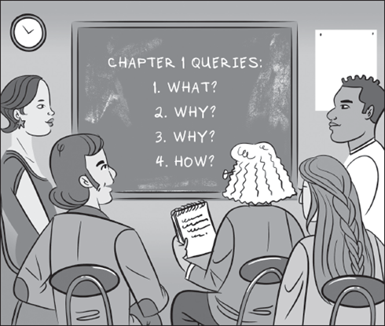
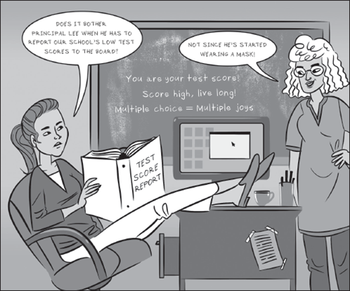
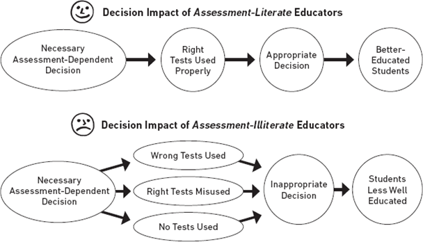

1 평가 리터러시: 대상, 이유, 방법
이 책은 교육 평가에 관한 책으로, 담임 교사와 학교를 운영하는 데 필요한 장학사 등 교육행정가를 위해 특별히 집필되었습니다. 이 첫 장에서는 이 책의 내용, 그리고 이 책에서 다루는 주제가 저와 여러분, 여러분의 동료, 그리고 국가 전체에 왜 그렇게 중요한지 말씀드리겠습니다.
많은 교사와 교육행정가들이 그랬던 것처럼, 저도 젊은이들의 학습을 돕고 싶었기 때문에 교육 분야의 직업을 선택했고, 물론 개별 어린이는 물론 집단 어린이도 돕고 싶었습니다. 학생 개개인을 위한 양질의 교육이 학교 교육의 궁극적인 목표이기는 하지만, 야심찬 사람들은 좀 더 거시적인 관점에서 생각합니다. 우리가 원하는 것은 모든 어린이에게 양질의 교육을 제공하는 것입니다. 야심찬 목표와 함께 현실적인 목표를 가지고 이를 실현할 수 있는 방법을 찾으려고 노력합니다. 오랜 경력을 쌓은 지금, 저는 우리나라 학교를 개선하는 가장 비용 효율적인 방법은 교육자의 평가 능력을 높이는 것이라고 확신합니다.
“가장 비용 효율적인” 개선 방안이라는 저의 주장이 과장된 것일 수도 있겠지만, 저는 이 주장이 매우 정확하다고 생각합니다. 예를 들어, 교직에 종사하는 사람들의 급여를 어떻게든 두 배로 늘릴 수 있다면 유능한 젊은이들이 교사가 되겠다고 등록하는 무리를 곧 발견할 수 있을 것이고, 시간이 지나면 유능한 새 교사들이 학생들의 학습에 긍정적인 영향을 미칠 것입니다. 하지만 교사의 급여를 두 배로 올리려면 적지 않은 예산이 소요될 것입니다. 마찬가지로 교사 한 명이 지도해야 하는 학생 수를 절반으로 줄일 수 있다면 학급 규모가 작아져 학습 효과가 향상될 가능성이 높습니다. 하지만 급여를 두 배로 늘리겠다는 환상도 그랬듯이, 학급 규모를 의미 있게 줄이는 전략은 아마도 엄청나게 많은 비용이 들 것입니다.
비용 제약으로 인해 교육을 개선하기 위한 강력한 조치를 취하지 못하는 경우가 많기 때문에 학교를 개선하기 위한 진정으로 비용 효율적인 전략을 제시하는 책에 주목할 필요가 있다고 생각합니다. 평가 리터러시를 높이는 것이 바로 그러한 전략입니다. 이 전략은 주정부의 예산을 낭비하는 학교 자금 지원 공식을 개정할 필요 없이 교육자들이 새로운 것을 배우기만 하면 됩니다. 평가에 능통한 교육자가 적절한 평가를 통해 도출된 증거를 바탕으로 교육적 결정을 내릴 때, 그 결과는 거의 항상 더 방어 가능한, 즉 학생들의 학습을 개선할 가능성이 높은 결정이 될 것입니다.
이것이 바로 이 책의 내용이 저에게 중요한 이유이며, 여러분과 우리 모두에게 중요하다고 생각하는 이유입니다.
더 깊이 파고들기 전에 잠시 질문을 던지고 싶습니다. 특히 여기서는 책 전체의 틀을 제공할 네 가지 질문을 먼저 살펴보고자 합니다:
평가 리터러시란 무엇인가요?
왜 교육자들은 아직 평가 리터러시를 갖추지 못했을까요?
교육자가 평가 리터러시를 갖춰야 하는 이유는 무엇인가요?
교육자는 어떻게 평가에 능숙해질 수 있을까요?
이 장이 끝날 때, 이 네 가지 질문에 대한 자신만의 답을 찾을 수 있기를 바랍니다. 물론 여러분의 답변이 저와 비슷하길 바라지만, 약간의 차이는 충분히 용인할 수 있습니다.
1.1 평가 리터러시란 무엇인가?
지난 20년 동안 제가 글을 쓰면서 강조해 온 평가 리터러시의 정의는 다음과 같습니다:
평가 리터러시는 교육적 결정에 영향을 미칠 수 있는 것으로 간주되는 기본적인 평가 개념과 절차에 대한 개인의 이해로 구성됩니다.
이 책 전체가 평가 리터러시의 개념을 중심으로 다루고 있으므로, 이 정의의 핵심 구성 요소가 무엇을 의미하는지 확실히 알아봅시다.

1.1.1 기본 평가 개념은 무엇인가요?
먼저, 이 정의는 개인의 “기본적인 평가 개념과 절차에 대한 이해”를 중심으로 하고 있다는 점을 알 수 있습니다. 그렇다면 이 기본이란 무엇일까요?
우선 이 문구에서 핵심적인 용어인 평가라는 단어를 살펴볼 수 있습니다. 이 책에서는 평가(assessment), 검사(test), 시험(exam), 측정(measurement)이라는 용어를 혼용하여 사용하는 오늘날 대부분의 교육자들의 의견을 따를 것입니다. 물론 몇몇 저자들은 이러한 용어의 미묘한 차이를 구분하려고 노력하지만, 저는 일반적으로 그렇게 하지 않습니다. 물론 많은 성인에게 검사라는 용어는 학생 시절에 의무적으로 치러야 했던 종이와 연필로 작성하는 시험의 이미지를 떠올리게 합니다. 또한 ’측정’이라는 단어는 종종 짧은 거리부터 별 사이의 거리까지 거리를 측정하거나 가벼운 무게부터 무거운 무게까지 계산하는 이미지를 떠올리게 합니다. 아마도 이러한 선입견을 피하기 위해 ’평가’라는 단어가 현재 검사(testing) 동의어 사용 순위에서 가장 높은 순위에 있는 것 같습니다. 이 단어는 가장 일반적으로 적용 가능한 설명어로 여겨지며, 불필요하거나 오염될 소지가 적습니다.
따라서 교육 평가(Educational assessment)는 학생의 상태를 파악하기 위해 사용하는 모든 절차를 설명하는 데 사용될 수 있습니다. 예를 들어, 학생이 대수의 세계에게 얼마나 잘 헤매는지 또는 과학 개념을 얼마나 능숙하게 풀어낼 수 있는지 등을 설명하는 데 사용할 수 있습니다. 앞으로의 페이지에서 평가 대신 측정, 시험 또는 검사라는 용어를 가끔씩 사용하게 된다면, 제가 어떤 교묘한 미묘한 평가의 진실을 알려주려는 것이 아니라는 점을 알아주시기 바랍니다. 단순히 A라는 단어를 사용하는 데 지쳤을 가능성이 더 큽니다.
하지만 L이라는 단어는 어떨까요? 평가 리터러시는 “와인 리터러시”, “자동차 리터러시”, “미디어 리터러시”와 같은 특정 분야의 역량과 지식보다는 일반적인 “리터러시”(읽고 쓰는 능력)와 더 유사합니다. 몇 단락 전에 제시된 정의에서 언급했듯이 평가 리터러시의 기본은 평가의 기본 개념과 절차, 즉 진정한 기초가 되는 것입니다. 여기서 개념은 타당도, 신뢰도, 공정성과 같은 측정 개념을 의미합니다. 절차는 시험을 만들거나 평가하는 데 일반적으로 사용되는 기술 또는 방법(예: 응시자의 특정 하위 그룹에 편향된 시험 문항을 식별하는 데 사용되는 기술)을 의미합니다.
1.1.2 의사 결정에 영향을 미치는 사람만 해당함
보시다시피, 평가 리터러시는 기본 개념과 절차를 나열하는 데 중점을 두는 것이 아니라 아이들의 삶을 바꿀 수 있는 교육적 결정에 실제 영향을 미칠 수 있는 소수의 기본 개념과 절차만을 다룹니다.
난이도는 높지만, 평가 리터러시의 고무적인 특징은 교육적 측정의 의사 결정에 영향을 미치는 기본 사항에만 초점을 맞춘다는 것입니다. 이를 파악하는 것은 매우 관리하기 쉬운 작업입니다.
1.2 교육자들은 왜 아직 평가에 익숙하지 않을까요?
평가 리터러시의 본질을 조금 살펴본 후, 오늘날의 교육자들이 앞으로 읽게 될 교육 평가의 개념과 절차에 어느 정도 익숙해졌는지 궁금할 것입니다.
이는 당연한 궁금증이며, 이 첫 장에서 다루기에 적절한 시기적절한 궁금증입니다. 안타깝게도 오늘날의 교육자 중 상당수는 평가에 대해 잘 알지 못합니다. 그들은 단순하게도 교육적 검사의 기본 개념과 절차를 이해하지 못합니다.
1.2.1 평가 리터러시 이니셔티브
이 문제를 지적한 사람은 제가 처음이 아닙니다. 교육부와 같은 정부 단체와 교장협의회(PTA), 초등학교 교장협회(NAESP) 등의 비정부 단체는 교육자, 교육 정책 입안자, 학생의 학부모, 심지어 학생 스스로의 평가 이해력을 향상시키기 위한 수많은 이니셔티브를 시작했습니다. 그러나 이러한 노력의 대부분은 최근 몇 년 동안에야 이루어졌기 때문에 이러한 대상 그룹의 평가 리터러시가 조만간 크게 향상되기는 어려울 것으로 보입니다.
현재 많은 관찰자들은 평가 리터러시 향상이 가장 필요한 대상은 미국의 교사와 교육 행정가라고 결론 내리고 있습니다. 이 중추적인 사람들이 교육 시험의 기본에 대해 더 잘 알고 있을수록 학교를 관리하는 학교 이사회 구성원이나 학교가 서비스를 제공하는 학생의 학부모와 같은 다른 사람들과 평가 관련 통찰력을 더 쉽게 공유할 수 있습니다.
“아는 것이 많으면 위험하다”는 말이 있습니다. 대부분의 격언이 그렇듯이, 그 속에는 적어도 한 줄기의 지혜가 숨어 있습니다. 사람들은 무언가에 대해 조금만 알고 있으면 실제보다 더 많이 알고 있다고 생각하는 경우가 많습니다. 자신이 알아야 할 모든 것을 습득했다고 생각하기 때문에 그 주제를 더 깊이 파고들기를 꺼려하고, 따라서 자신이 제공해야 할 조언을 훨씬 뛰어넘는 조언을 제공할 준비가 되어 있습니다.
우리나라의 교육자 중 너무 많은 사람들이 평가에 대해 너무 적게 알고 있으면서도 이 정도면 충분하다고 믿는 함정에 빠져 있습니다. 이들은 전문가이며, 많은 이들이 수년 동안 그렇게 해왔습니다. 이들은 공식적이든 비공식적이든 시험을 작성합니다. 이들은 자체적으로 설계한 테스트와 외부의 전문 기관에서 제공하는 테스트 모두 정기적으로 시행합니다. 이들은 테스트 결과를 보고 그 결과가 무엇을 의미하는지 판단합니다. 모든 것이 잘 진행되고 있습니다. 무엇을 놓치고 있을까요? 더 알아야 할 것이 있을까요?
1.2.2 진행 중 발생하는 문제
이제 교사가 교사 양성 과정에서 교육 측정에 대한 공식적인 과정을 이수하도록 요구하는 주의 수가 의미 있게 증가하기 시작했습니다. 그러나 이탤릭체로 표시할 만한 가치가 있는 것은 이러한 교사 준비 과정 중 상당수가 측정 전문가인 교수들이 가르치고 있다는 점입니다. 이들이 설계하는 과정은 논쟁의 여지가 있고 때로는 모호한 평가 내용으로 가득 차 있습니다. 의사 결정에 가장 큰 영향을 미치는 내용만 제공해야 하는데, 예비 교사들에게 비실용적인 측정 전문 용어를 쏟아내고 있습니다. 솔직히 말해서, 현재로서는 교육 측정 과정을 이수한 새내기 교사라도 평가에 대한 이해도가 높다고 자동적으로 단정할 수 없습니다.
교육 행정가 역시 평가 문맹으로 인한 부작용에서 자유로울 수 없습니다. 많은 지역에서 공인 교육 관리자가 되기 위한 교육을 이수한 사람들 대부분이 교육 평가에 관해 단 한 과목도 수강하지 않았습니다. 설령 이수했다 하더라도, 그들이 이수한 과정은 실제 교육자가 실제 학생의 진도를 측정하는 방법의 실용성보다는 그 과정을 가르친 측정 전문가의 기술적 관심사에 더 부합했을 가능성이 높습니다.
따라서 제가 여기서 주장하는 바는 여러분이 상호작용하는 교사나 관리자가 평가에 능숙하다고 가정하는 것은 중대한 실수라는 것입니다. 그들은 실제로 자신의 잘못이 아니더라도 직면하는 가장 중요한 교육적 결정을 내릴 준비가 제대로 되어 있지 않을 수 있습니다. 그들은 평가에 대해 ‘충분히’ 알고 있다고 생각하지만 대부분은 그렇지 않습니다.
1.2.3 저자의 고백
제가 이 지면을 통해 제 동료들을 비하하는 글을 쓴다고 생각하지 않으시길 바라며, “그는 알고 있다고 생각했다”의 선두에 저를 올려놓습니다. 제가 고등학교 교사가 되기 위해 준비할 때 교육 측정의 기본에 대해 의미 있는 교육을 받은 적이 없었습니다. 제가 수강한 교육심리학 필수 과목 중 정확히 세 번의 수업이 선다형 시험 문항 관리와 출제에 관한 것이었지만, 저와 예비 교사들이 받은 교육은 이것이 전부였습니다.
그래서 첫 학생들을 가르치기 시작했을 때, 제가 직접 교실 평가를 고안하기 위해 참고한 것은 제가 학생 시절에 개인적으로 치렀던 시험에 대한 기억이었습니다. 그 시험 중 일부는 견고했고 일부는 부실했습니다. 교육자로서의 경력의 전반부 동안 저는 교육 시험과는 전혀 관련이 없었고, 그 대신 수업의 교육적 측면에 집중하는 것을 선호했습니다. 대부분의 사람들과 마찬가지로 저는 시험에 대해 ‘충분히’ 알고 있다고 생각했고, 더 높은 수준의 이해는 평가 문제를 성공적으로 풀 수 있도록 특별히 훈련받은 측정 전문가, 즉 심리측정학자들의 몫이라고 생각했습니다.
시험 점수가 학생과 학교에 대한 중요한 결정, 때로는 돌이킬 수 없는 결정을 내리는 데 사용되기 시작했을 때 비로소 저는 시험이 교사의 일상적인 수업에 미치는 영향의 중요성을 뒤늦게 깨달았습니다. 요컨대, 제 경력의 대부분 동안 저는 오늘날의 많은 교사와 교육행정가들처럼 시험장 안에서 벌어지는 일에 무관심했습니다. 평가에 문외한이 되는 것이 어떤 것인지 너무나 잘 알고 있습니다.
“평가 문맹”이라는 꼬리표에 대해 간단히 말씀드리겠습니다. 특정 주제에 대해 전문가가 아닌 사람이 경멸적이거나 모욕적으로 인식될 수 있는 용어로 설명될 때 생산적인 교육적 대화가 이어지는 경우는 드뭅니다. 저는 이 용어를 사용하는 것에 대해 의구심이 들며 사용을 권장하지 않습니다. 이 소개 장 외에는 이 용어가 책에 등장하지 않습니다.
1.2.4 경륜과 약속
여러분이 교육자일 가능성이 높기 때문에 잠시 시간을 내어 “입학 죄책감”으로 특징지어질 수 있는 것에 대해 말씀드리고자 합니다. 아직 평가에 능숙하지 않아서 양심의 가책을 느끼고 계신다면, 지금 당장 그 생각을 떨쳐버리길 원합니다. 그것은 여러분의 잘못이 아니며, 여러분에게는 많은 동료가 있습니다. 게다가 이 책을 읽음으로써 여러분은 자신이 원하는 곳으로 가는 길에 들어서고 있는 것입니다.
1.3 교육자가 평가에 능숙해져야 하는 이유는 무엇인가요?
이 책의 가장 중요한 목적은 교육자가 몇 가지 측정 개념과 절차를 이해하여 이를 적절히 적용하여 올바른 교육적 결정을 내리고 학생들이 받는 교육의 질을 개선할 수 있도록 돕는 것입니다.
또한 평가에 능통해지는 것은 교육자에게 개인적으로도 큰 도움이 될 것입니다. 교육적 의사 결정에서 중요한 역할을 하는 기본 개념과 프로세스에 대해 더 많이 이해할수록 직면한 의사 결정 옵션 중에서 최선의 선택을 할 가능성이 높아집니다. 이러한 더 방어 가능한 결정은 그들이 돌보는 학생들에게 도움이 될 것입니다. 교육자들은 더 나은 교육자가 될 수 있으며, 이는 다른 사람들도 알아차릴 것입니다. 솔직히 말해서, 평가에 능숙하면 성공적인 교육자로 인정받을 확률이 높아지며, 실제로 성공적인 교육자가 될 수 있기 때문입니다.
좋은 결정을 내린다는 것은 실수를 피하는 것을 의미하며, 평가에 문맹인 교사와 교육행정가가 저지르는 실수의 종류는 (1) 잘못된 시험 사용, (2) 올바른 검사 결과 오용, (3) 교육적으로 유용한 시험을 활용하지 않는 세 가지 범주에 속합니다. 지금부터 이 세 가지 실수에 대한 간단한 설명과 몇 가지 예를 살펴보겠습니다.
1.3.1 잘못된 검사 사용
교육자, 특히 교육청 또는 교육감과 같은 영향력 있는 교육자들이 저지르는 가장 심각한 실수 중 하나는 학생들이 표준화 시험에서 획득한 점수에 크게 의존하여 다른 교육자의 교육적 성공을 평가하는 것입니다. 이 책의 뒷부분에서 배우게 될 것은 오늘날 대부분의 표준화 시험에는 이러한 중요한 평가 임무에 적합하다는 증거가 없다는 것입니다. 많은 표준화 교육 시험은 학기 중 서로 다른 시기에 시험을 치렀을 때 학생의 점수가 얼마나 일관성이 있는지와 같은 일종의 기술적 증거를 제공합니다. 그러나 학교를 평가하는 데 사용되는 바로 그 표준화 시험은 학생의 점수가 교사의 교육 효과를 정확하게 파악하는 데 사용될 수 있다는 증거를 전혀 제공하지 않습니다. 따라서 특정 학교가 효과적인지 아닌지를 판단하고 그에 따라 후속 조치를 취하거나 취하지 않는 결정을 내리는 것은 거의 틀릴 수밖에 없습니다.
따라서 우리는 잘못된 평가에 따라 취약한 것으로 잘못 판단된 강력한 학교가 상부로부터 ‘실패한’ 교육 방식을 수정하라는 지시를 받는 경우를 보게 됩니다. 또는 정말 효과적인 학교가 잘못된 시험으로 학생들이 만들어 가는 과정을 파악할 수 없기 때문에 학생들에게 효과적인 방법을 포기해야 하는 경우도 있습니다. 반대로, 사회경제적 지위가 높은 가정에서 온 학생들이 학교에서 배우지 못한 것을 가정에서 배웠다는 이유만으로 부실한 학교가 우수한 학교로 간주되는 경우도 있습니다. 적절한 평가 시험이 사용되었다면 이러한 취약한 학교를 정확하게 파악하고 교육적 결함을 합리적으로 해결할 수 있었을 것입니다.
과제에 명백히 잘못된 시험 점수에 따라 학교와 교사를 평가하는 것은 쉽게 고칠 수 있는 실수이기 때문에 특히 더 큰 실수입니다. 학교나 교사의 효율성을 정확하게 평가하려면 증거에 따라 평가 기능에 적합한 시험을 사용해야 합니다.

1.3.2 올바른 검사 결과 오용
두 번째로 일반적으로 발생하는 측정 관련 실수는 잘못된 적용입니다. 즉, 한 목적에 적합한 검사가 다른 목적에 부적절하게 사용되는 경우입니다. 다른 특정 목적을 제공하기 위해 개발된 검사의 새로운 용도를 찾는 데 근본적으로 결함이 없기 때문에 이는 더 복잡한 문제입니다. 그러나 모든 교육 시험이 다목적이라고 자동으로 가정할 수는 없습니다. 하나의 측정 임무를 위해 특별히 구축된 검사가 다른 측정 임무를 충족하는 데 적합하다는 설득력 있는 증거를 수집하는 것은 항상 필요합니다.
다음은 두 번째 종류의 측정 실수에 대한 일반적인 예시입니다. 밀러 선생님의 5학년 학생들은 학년 중 세 차례에 걸쳐 연말 표준화 수학 시험에 나올 내용의 샘플을 추출하는 40분 수학 시험을 치르게 됩니다. Miller 씨는 중간 시험, 즉 같은 학생을 대상으로 약간 다른 형식(버전)으로 학년도 동안 여러 번 실시되는 평가를 사용하고 있습니다. 일반적으로 같은 교실에서 또는 학교의 같은 학년 수준의 모든 교실에서 사용할 수 있습니다. 임시 테스트는 지역 교육자들이 개발할 수 있지만 요즘에는 이러한 테스트가 상업용 테스트 회사에서 만들어지고 판매되는 경우가 많습니다.
시험 발행사에 따르면 이 시험의 구체적인 의도는 교사가 “학생의 미래 학업 성과에 대해 보다 정확한 예측”을 할 수 있도록 돕는 것입니다. 특히 학생들의 점수는 밀러 선생님과 같은 교사들이 어느 학생이 주정부의 1시간짜리 방과후 수학 표준 책임 시험에 합격(또는 낙제)할 가능성이 있는지 식별하는 데 도움을 주기 위한 것입니다. 연말 테스트 성과의 정확한 예측을 지원하는 중간 테스트를 만들기 위해 평가 회사는 연간 책임 테스트로 측정된 25가지 수학 능력의 전체 범위를 신중하게 샘플링합니다. 그러나 이러한 포괄적인 내용 범위의 결과는 학년말 책임 시험에 나타나는 많은 기술이 각 중간 시험 형태의 하나 또는 최대 두 개의 항목으로만 평가될 수 있다는 것입니다. 5학년 학생들이 단일 수업 시간 내에 시험을 완료해야 한다는 점을 고려하면 더 이상 포함할 여지가 없습니다.
테스트 작성자의 신중한 정렬과 전문가 샘플링이 성과를 거두었던 Miller 선생님 강의실로 빠르게 이동하세요. 지난 몇 년 동안 세 가지 동등한 형태의 중간 시험은 각각 학생들이 봄철 책임 시험에서 얼마나 잘 수행할 것인지 예측하는 정확한 작업을 수행해 왔습니다. 이제 9월에 첫 번째 중간 시험 점수가 코앞에 다가왔으며 Miller 씨는 개입을 계획하고 있습니다. 그녀는 각 학생의 독특한 약점에 교정 교육을 집중할 계획이므로 각 학생이 잘못 대답한 시험 항목과 해당 문항이 샘플링하는 기술 목록을 만듭니다. 즉, 그녀는 해당 기술에 해당하는 한두 가지 문항에 대한 학생의 성과를 기반으로 각 학생의 기술 숙련도를 판단하고 있습니다. 그녀는 교육적 진단 테스트로 예측 테스트를 사용하고 있는데, 이는 의도한 바가 아니었습니다.
제3장에서 더 자세히 살펴보겠지만, 한두 가지 문항에 대한 학생의 수행 능력을 바탕으로 해당 학생의 기술별 숙련도에 대해 충분히 정확한 추론에 도달하는 것은 명백히 방어할 수 없습니다. 이는 한 가지 목적으로 훌륭한 교육 평가가 다른 목적으로 사용될 때 쉽게 잘못된 교육 결정으로 이어질 수 있는 예입니다.
1.3.3 교육적으로 유용한 시험 사용 실패
지난 20년 동안 교육 연구자들은 수많은 설득력 있는 증거를 수집하여 본질적으로 논란의 여지가 없는 결론에 도달했습니다. 즉, 교실 평가를 통해 학생의 학습을 모니터링하여 교사와 학생이 진행 중인 학습에 조정이 필요한지 여부를 결정할 수 있을 때 학생들은 그렇지 않을 때보다 훨씬 더 잘 학습한다는 것입니다.
일반적으로 ‘형성 평가’ 또는 ’학습을 위한 평가’라고도 하는 이러한 교육적 평가의 활용에 대해서는 제6장에서 다룰 것입니다. 하지만 그 전에 간단한 두 가지 명제를 생각해 보시기 바랍니다: 수업 평가가 형성 평가 과정의 일부로 사용될 때 학생들의 학습 증진에 확실히 기여할 수 있다는 증거가 있다면, 그리고 그러한 평가가 그러한 칭찬할 만한 목적으로 사용되지 않는다면, 우리는 교육용 시험을 잘못 사용하는 세 번째 범주에 도달한 것입니다.
평가에 능숙한 교육자는 형성적 평가의 가치와 사용법을 잘 알고 있습니다. 이들은 학생의 학습 진도에 대한 통찰력을 얻기 위해 어떤 시험을 사용할지, 그리고 그러한 시험의 결과를 어떻게 활용할지에 대해 보다 적절한 결정을 내리는 경향이 있습니다. 평가에 대한 이해가 부족한 교육자는 어떤 시험을 사용할지, 시험 결과를 어떻게 활용하여 수업과 학습을 개선할지에 대해 부적절한 결정을 내리는 경향이 있습니다. 요컨대, 평가 이해력은 우리가 가르치는 학생들이 더 나은 교육을 받을 수 있는 가능성을 높여줍니다. 물론 이것은 우리가 추구할 만한 가치가 있는 열망입니다.
그림 1.1은 평가 문해력이 있는 교육자와 평가 문맹인 교육자가 교육적 결정을 내릴 때 일반적으로 일어나는 일련의 사건을 보여줍니다. 그림에서 알 수 있듯이, 더 적절한 의사 결정을 내리는 교육자의 목표는 학생들의 교육 향상입니다. 제 생각에는 교육자들이 애초에 평가에 관심을 갖는 유일한 이유가 바로 이것입니다.

1.4 교육자가 평가에 능숙해지려면 어떻게 해야 할까요?
이 첫 장에서 다룰 네 번째이자 마지막 질문은 더 많은 교사와 관리자가 평가에 능숙해져야 하는 현재의 현실에 어떻게 대처할 것인가에 관한 것입니다. 이 질문을 조금 더 개인화해서 생각해보면, 어떻게 하면 평가에 능통한 사람이 될 수 있을까라고 생각할 수 있습니다.
저는 이 책을 1박 2일, 2박 3일 또는 주말에 한 번만 읽으면 평가에 능숙해질 수 있다고 생각합니다. 앞으로 이어질 챕터에 대한 저의 게임 계획을 간략하게 설명하겠습니다. 이 책은 평가 리터러시에서 평가 문맹으로 빠르게 전환하는 방법에 대한 저의 최선의 감각을 나타냅니다.
저는 이미 평가 문해력이 교육적 결정에 영향을 미칠 수 있는 기본적인 평가 개념과 절차에 대한 개인의 이해에 달려 있다고 주장한 바 있습니다. 제가 다루지 않은 것은 평가 리터러시의 “반드시 이해해야 하는” 배낭에 어떤 개념과 절차를 넣어야 하는지를 누가 결정할 것인가 하는 것입니다. 이 질문에 대한 답은 인간의 판단에 달려 있습니다.
흔히 정량적 고려 사항에 얽매이고 소수점에 의존하는 엄격하게 제한된 기술적 영역으로 여겨지는 교육 평가 분야에 인간의 판단이 넘쳐난다는 사실을 들으면 놀랄 수도 있습니다. 하지만 사실입니다. 실제로 교육 평가에 대해 더 많이 배울수록, 학생을 시험하고 학생의 반응을 통해 다음 단계의 교육적 조치에 도달할 때 판단에 기반한 결정이 우리를 둘러싸고 있음을 알 수 있습니다.
이 책에서 여러분이 의존하고 있는 판단은 바로 저의 판단입니다. 65년 동안 전문적으로 교육계에 종사하면서 가장 심각하게 경력을 망친 것은 교육자들에게 한 번에 너무 많은 일을 처리하도록 요구한 데서 비롯되었습니다. 지나친 열망의 부작용을 자주 겪었기 때문에 저는 ’적을수록 좋다’는 신조를 굳건히 지키게 되었습니다. 따라서 교육 평가와 관련된 개념과 절차는 무수히 많지만(잠재적으로 수백 개에 달할 수 있음), 저는 ’적게 더 많이’라는 접근 방식에 따라 평가 리터러시의 본질을 구성하는 작고 쉽게 내면화할 수 있는 교육 평가 이해의 집합을 선택하게 되었습니다. 저는 여러분이 이해하고 실천할 수 있는 6가지 평가 관련 개념과 절차를 선택했습니다.
이 6가지 이해는 교육 평가와 가장 관련이 깊은 미국의 3개 전문 협회인 미국교육연구협회(AERA), 미국심리학회(APA), 전국교육측정협의회(NCME)가 공동으로 발간한 교육 및 심리 검사 표준의 최신(2014년) 판의 평가 관련 지침이라는 훨씬 더 권위 있는 출처에서 탄생했습니다. 이 책은 미국 교육 측정 커뮤니티의 리더들이 가장 최근의 생각을 잘 반영하고 있는 것으로 널리 알려져 있습니다. 실제로 이 책(세 명의 공동 후원자 때문에 공동 표준이라고도 함)은 교육 시험과 관련된 법정 소송에서 주로 언급되며, 더 중요한 것은 이 책이 참고 자료로 활용된다는 점입니다. 또한 시험 개발 및 평가 방식에도 영향을 미칩니다. 공동 표준에서 권장하는 내용은 일반적으로 ’최상의 교육 평가 관행’을 나타내는 것으로 간주되며, 상업용 시험 회사가 이 지침을 따르지 않을 경우 해당 회사는 법정에서 시험을 방어해야 할 수도 있습니다.
공동 표준은 평가 리터러시 증진을 위해 ’해야 할 일’과 ’하지 말아야 할 일’을 제시하는 매우 유용한 평가 기준 모음입니다. 그러나 그것은 또한 방대한 자료집이기도 합니다. 공동 표준은 저명한 평가 전문가들로 구성된 위원회가 5년이 넘는 기간 동안 작업을 완료하여 개발한 것이므로, 이 문서의 가장 최근 개정판에는 교육 평가의 중요성이 높은 측면뿐만 아니라 평가 전문가들이 주로 관심을 갖는 내용도 포함되어 있는 것은 놀라운 일이 아닙니다.
이 책에서 다루게 될 6가지 평가 관련 이해는 공동 표준에서 다루고 있는 개념과 절차 중 가장 실용적이고 실천에 영향을 미치는 개념과 절차에 대한 저의 개인적인 판단을 나타냅니다. 이 6가지 우선순위가 높은 이해를 내면 평가에 대한 지식이 풍부해지고 학군, 학교 또는 교실에서 직면할 수 있는 평가 기반 교육적 결정을 내릴 수 있는 역량을 갖추게 될 것입니다. 1박 2일 또는 주말에 읽기에 나쁘지 않은 분량입니다!
1.5 마지막 입문 안내
다음 6개의 장은 각각 하나의 평가 관련 이해를 중심으로 구성되어 있습니다. 각 장은 해당 장에서 다루는 특정 개념 또는 절차가 교육자의 철저한 이해가 필요한 이유를 설명하는 것으로 시작됩니다. 이어서 ’이해의 이해’라는 동료 간 설명이 이어집니다. 여기에서는 각 이해의 구성 요소의 복잡성에 대해 자세히 설명합니다.
다음으로, 이 장에서는 “이해의 적용”이라는 섹션으로 넘어가 방금 소개한 특정 평가 관련 이해를 호출하여 가장 잘 내릴 수 있는 의사 결정의 현실적인 시나리오를 제시합니다. 이 연습에 대한 자신의 반응에 대해 개인적으로 결정을 내릴 기회가 주어지며, 그 후 동일한 문제에 대한 저의 의견을 제시합니다(“짐의 결정”). 물론 이 연습에 대한 여러분의 결정이 반드시 저의 결정과 일치할 필요는 없으며, 서로의 판단에 차이가 있다면 더 깊이 탐구할 수 있는 영역으로 간주해야 합니다. 여기서 목표는 여러분이 평가에 대한 이해를 적용하는 연습을 할 수 있도록 하는 것입니다. 다시 말하지만, 이 여섯 가지 이해에 대한 실천 가능한 이해를 증진하는 것이 이 책의 주요 목표입니다.
2장부터 7장까지는 모두 ’시간이 촉박한 사람들을 위해’라는 섹션으로 마무리되며, 이 섹션에서는 각 장의 주요 이해 사항을 간략하게 요약합니다. 이 책은 평가 리터러시 증진에 적극적으로 참여하려는 의지로 이 책을 다 읽고 나면 동료들과 함께 참고하고 토론하고 공유하기에 좋은, 최소한의 핵심 내용만 압축하여 정리한 것입니다.
이 책의 마지막 장은 이렇게 마무리하는 장으로는 이례적인 구성입니다. 먼저 앞의 일곱 장에서 진행된 내용을 간략하게 정리합니다. 물론 이는 그리 드문 일은 아닙니다. 그러나 이 장에서는 동료들과 함께 평가의 모닥불을 피우기 위해 사용할 수 있는 짧은 언어적 불쏘시개인 네 개의 짧은 에세이 모음도 함께 제공합니다. 따라서 8장의 제목은 “마무리, 도달하기”인데, 이는 앞의 7장에 대한 간략한 개요와 함께 교육 평가에 대해 개인적으로 널리 알릴 수 있는 한 가지 실질적인 방법을 제공하기 위한 것입니다.
책을 다 읽은 후 더 이상 읽을 장이 없어 경건함과 아쉬움을 동시에 느끼며 책을 내려놓으면 두 가지 종류의 ’정신적 점검’을 통해 자신의 이해 수준이 정말 만족스러운지 확인할 수 있습니다:
이 책의 각 평가 원칙을 언제 사용해야 하는지 알고 계십니까? 먼저, 각 장의 평가 관련 이해를 충분히 숙지하고 있는지 평가하여 교육적 결정에 직면했을 때 그 결정이 임박한 결정을 내리는 데 도움이 될지 바로 알 수 있도록 해야 합니다. 저는 이 점검을 판단에 미치는 영향이라고 부릅니다. 교육적 결정에 영향을 미치기 위해 이해를 사용하는 것입니다.
이 원칙을 설명해 주시겠어요? 둘째, 각 장의 평가 관련 이해를 다른 사람에게 설명할 수 있을 만큼 잘 이해하고 있는지 스스로에게 물어봐야 합니다. 이해한 내용을 동료에게 소리 내어, 서면으로, 또는 PowerPoint 프레젠테이션이나 인형극 등 청중에게 적합한 설명 방식을 통해 합리적으로 명확하게 설명할 수 있을 만큼 잘 이해하고 있습니까? 이 점검은 평가 이해의 영향력을 확대하고 필요한 곳에서 평가 리터러시를 구축하기 위한 것입니다. 이는 모든 곳에서 필요합니다.
시작해 보겠습니다.
평가 리터러시 - 1 평가 리터러시: 대상, 이유, 방법 평가 리터러시 - 1 평가 리터러시: 대상, 이유, 방법 평가 리터러시 - 1 평가 리터러시: 대상, 이유, 방법 평가 리터러시